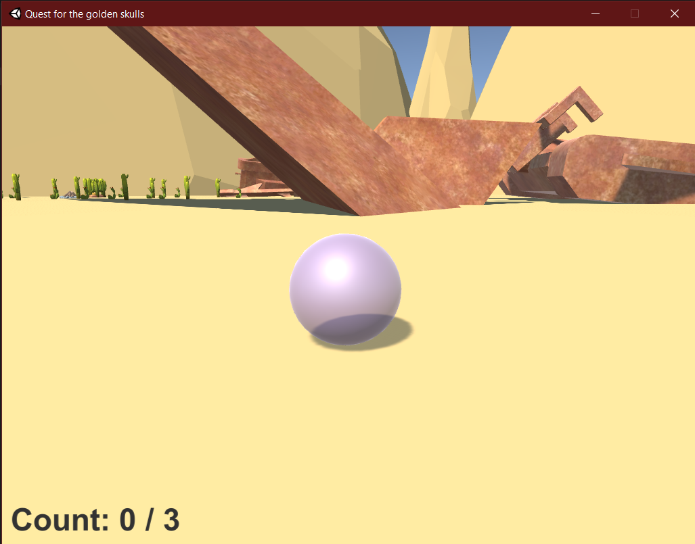
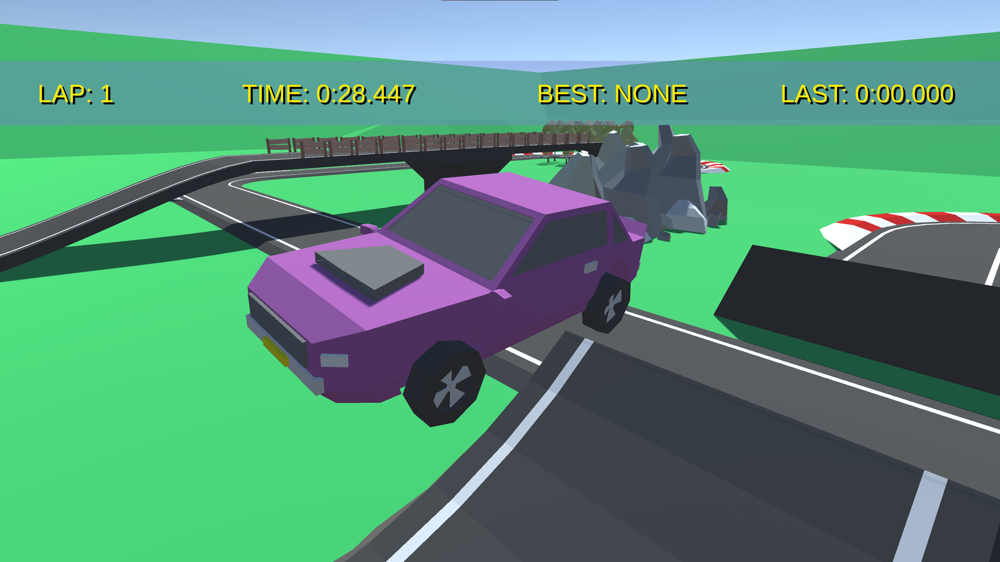
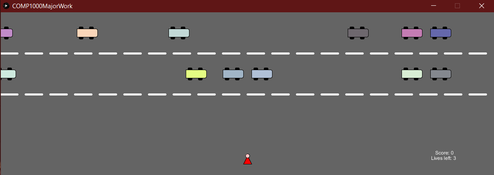
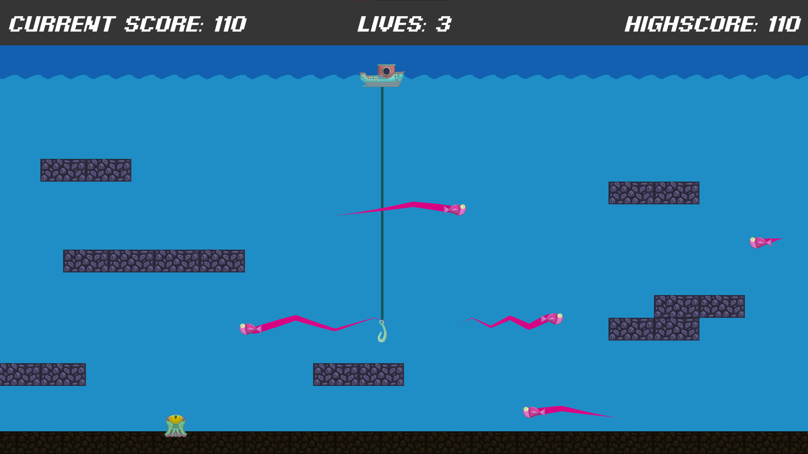
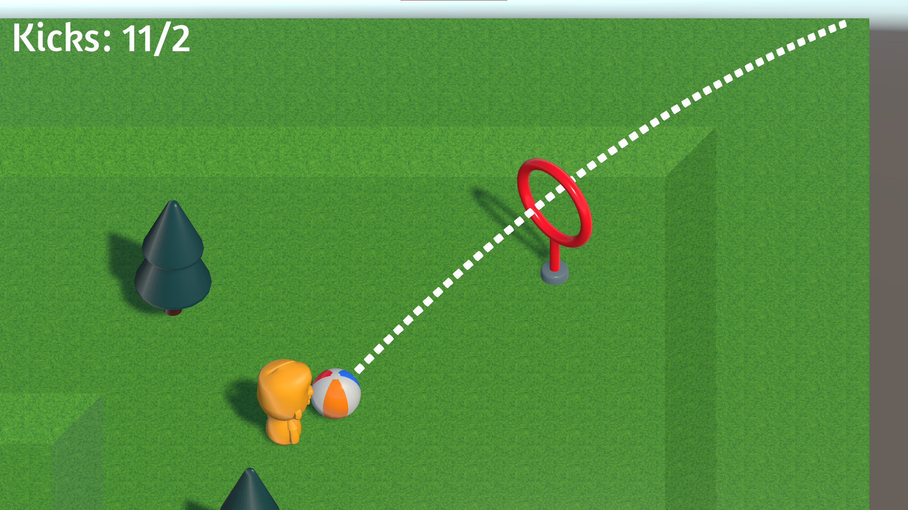

Other projects I have worked on at a much more beginner level

The first game I ever created, built at a school holiday code camp it taught me the basics of unity development, additionally, it uses models I created myself in a different coding camp. After building the game at the camp I took it home and expanded upon it on and off for the next few years.

This unnamed racing game was made for my year 12 Software design and development major work. It featured both a playable racing game with many features as well as section that allowed you to control a connected, real world RC buggy with keyboard controls, received a high (90+%) mark.

The first game I made in my first semester of university, built using processing 3, a game where you controlled a character and your goal was to make it across the road without getting hit by a car. Received a high (90+%) mark.

Created during a game development course during my second year of Macquarie University. I created a game where you controlled a boat and a hook to catch fish, but you had to avoid the monster.

A game created in the same course as the fishing game, this time it was with a partner, the purpose of this project was to both expand my knowledge on 3D game development as well as teach me the correct ways to develop applications with a partner.